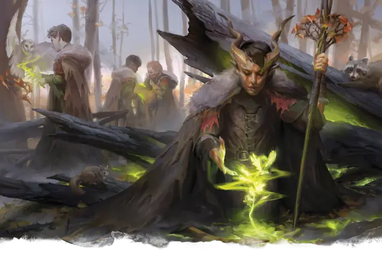

Друид
Druid
Средний или Маленький Гуманоид, Нейтральный

Класс Защиты 13 Инициатива +1 (11)
Хиты 44 (8к8 + 8)
Скорость 30 футов
| мод | спас | ||
|---|---|---|---|
| СИЛ | 10 | +0 | +0 |
| ЛОВ | 12 | +1 | +1 |
| ТЕЛ | 13 | +1 | +1 |
| мод | спас | ||
|---|---|---|---|
| ИНТ | 12 | +1 | +1 |
| МДР | 16 | +3 | +3 |
| ХАР | 11 | +0 | +0 |
Чувства пассивное Восприятие 15
Языки Общий, Друидический, Сильван
Опасность 2 (450 опыта; БВ +2)
Действия
Мультиатака. Друид совершает две атаки Посохом из лозы или Изумрудным огоньком в любой комбинации.
Посох из лозы. Бросок рукопашной атаки: +5, досягаемость 5 фт. Попадание: 7 (1к8 + 3) Дробящего урона плюс 2 (1к4) урона Ядом.
Изумрудный огонёк. Бросок дальнобойной атаки: +5, дистанция 90 фт. Попадание: 10 (3к6) урона Излучением.
Сотворение заклинаний. Друид сотворяет одно из следующих заклинаний (заклинательная характеристика — Мудрость, Сл спасброска заклинаний 13):
Неограниченно: Искусство друидов, Разговор с животными
2/день каждое: Волна грома, Опутывание
1/день каждое: Лунный луч, Почтовое животное, Скороход
Бонус мастерства +2
Среда обитания Любая
Сокровища Личные, Реликварные
Друид
Мудрецы и слуги природы
Друиды управляют первобытной магией, практикуют традиционные учения и укрепляют связь с животными и сверхъестественными существами, чтобы присматривать за природой мира и исцелять её недуги. Эти маги могут быть отшельниками, защищающими землю, на которой живут, или служить таинственному ордену. Совершите бросок по таблице «Друидическая традиция» для вдохновения или выберите сами магические практики друида.
Друидическая традиция
| 1к6 | Друид — это... |
| 1 | Мститель, который борется с разрушительным влиянием цивилизации и теми, кто злоупотребляет щедростью природы. |
| 2 | Проводник, который помогает путникам пересечь царства Животных, Фей или Растений. |
| 3 | Отшельник, который в одиночку защищает родные земли, моря и небеса. |
| 4 | Целитель, который путешествует по миру и излечивает раны мира после природных, магических или техногенных катастроф. |
| 5 | Член свободного союза, который придерживается вечных ритуалов и хранит секреты природы. |
| 6 | Страж, наблюдающий за фундаментом реальности и защищающий мир от межпланарных опасностей. |